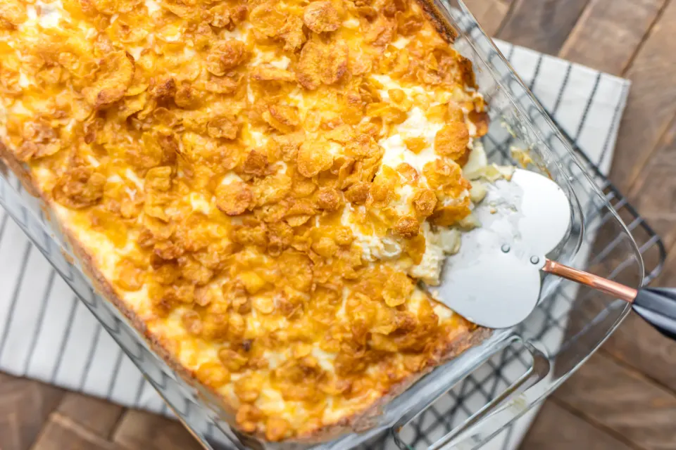

Potato Casserole

Description
This casserole is a family favorite. My grandmother made it for every holiday
when I was younger. When I got older,
and especially once I began to live alone I
knew that I had to have this recipe. It is now one which I have memorized.
This recipe is also a comfort food and has helped me feel better, even if just temporarily, when facing
some difficult times.
Ingredients
- 32 oz. Frozen Cubed Hash Browns
- 16 oz. Sour Cream
- 2 sticks butter
- 2 cups shredded Cheddar Cheese
- 2 8 oz. cans Cream of Chicken Soup
- 1/2 Yellow Onion, finely chopped
- 2 cups Corn Flakes, crushed
- 1 tsp Salt
- 1 tsb pepper
Steps
- Thaw out the Hash Browns
- In a large mixing bowl combine:
- Sour Cream
- 1 1/2 sticks butter
- Cheddar Cheese
- Cream of Chicken Soup
- Onion
- Salt
- Pepper
- Add the mixture to a greased 9 x 13 pan
- Mix the cornflakes with 1/2 stick of melted butter
- Spread cornflake mixture on top of the casserole
- Cover pan with aluminum foil
- Bake at 350 for 50 minutes
Home